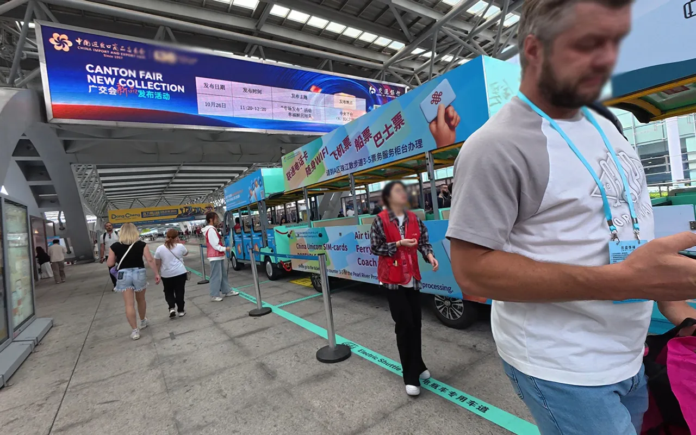
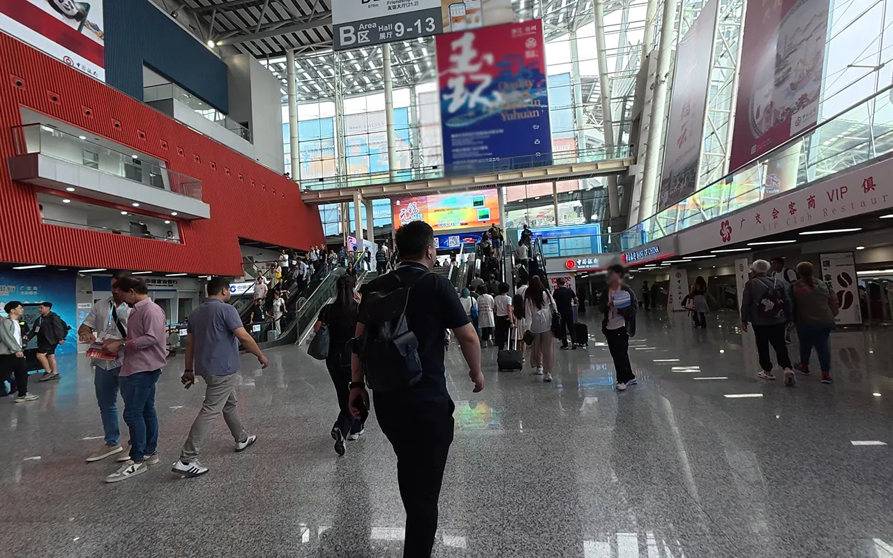
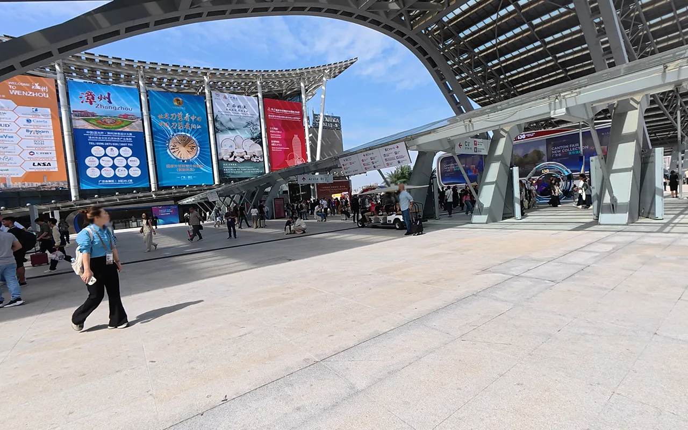
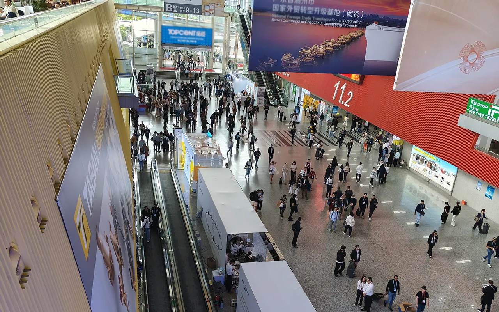
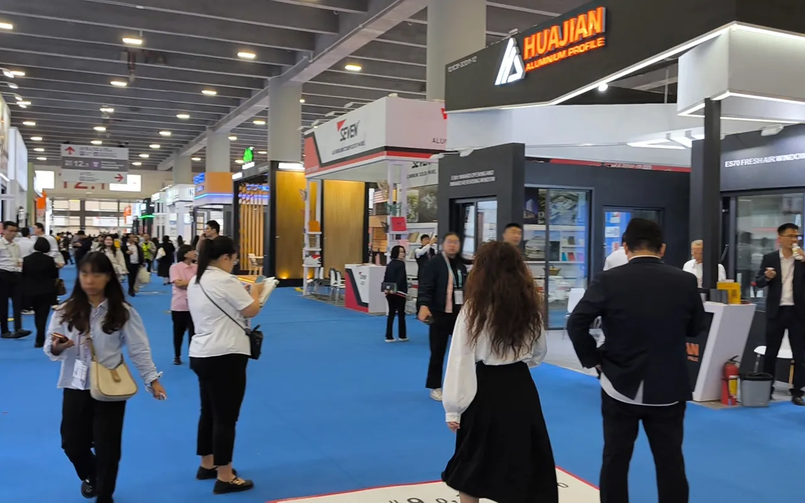

01 The Scale of the 139th Canton Fair
The 139th China Import and Export Fair (Canton Fair) in Guangzhou has just concluded. I've walked the halls myself over the past several days — and the numbers on paper don't do it justice. Let me tell you what it actually looked like on the ground.

The Canton Fair Complex in Guangzhou — 55 exhibition halls, thousands of booths, and one overwhelming question: where do you start?
The fair runs in three phases: Phase 1 (Electronics & Machinery), Phase 2 (Consumer Goods & Gifts), and Phase 3 (Textiles, Health Products, and Office Supplies). If you were strategic about which phase to attend based on your product category, you likely got more value than buyers who just showed up for one day and tried to cover everything.
The international buyer sections were noticeably busier than in previous years. Post-pandemic re-engagement with Chinese manufacturing is in full swing — and the fair reflects that energy.
02 What Was Hot: Product Trends from the Floor
Walking through the booths, certain categories stood out with significantly more foot traffic and supplier investment. Here's what buyers were gravitating toward at the 139th Fair:
Energy Storage & Portable Power
Power banks, solar generators, EV accessories — driven by camping/outdoor market growth globally
Water Sports Equipment
Electric surfboards, kart boats, water bikes — niche but growing rapidly in US and EU markets
Smart Home & AI Devices
Robot vacuums, AI-powered appliances, smart lighting systems — strong demand from EU buyers
Wellness & Health Products
Massage chairs, air purifiers, sleep aids — aging populations in Japan, Germany driving growth
Gaming & Esports Peripherals
RGB keyboards, gaming chairs, streaming equipment — strong demand from Southeast Asia and Latin America
Eco-Friendly & Recycled Materials
Sustainability is no longer optional — buyers from Germany, Netherlands, Sweden actively asking for green certifications

Smart home devices and tech products dominated Phase 1 at the 139th Canton Fair — AI integration is now standard across most electronics categories
Suppliers who had in-house R&D capabilities were consistently busier than pure trading companies or manufacturers without design teams. Buyers want differentiation — and a factory that can show you a roadmap of new models is far more valuable than one that's just copying last year's bestseller.
03 What Suppliers Told Us About Pricing in 2026
This is the part everyone wants to know. After walking dozens of booths and having frank conversations with suppliers, here's the reality:
- RMB exchange rate stability has made pricing more predictable than 2024-2025, but raw material costs (particularly metals and plastics) remain elevated compared to 2020 levels.
- Labor costs are up — not dramatically, but consistently. Factory owners I spoke with cited a 5–10% increase in per-unit labor costs year-over-year. This is being partially absorbed by suppliers to remain competitive, but the days of 30% discounts from Chinese factories are over.
- Minimum Order Quantities are becoming more negotiable — this is good news. Many factories are willing to lower MOQs for repeat buyers or for orders that combine multiple SKUs. The key is building relationships, not just transacting.
- Tariff anxiety is real — suppliers exporting to the US market are actively developing strategies to help buyers reduce tariff exposure: third-country transshipment, partial assembly routes, and HS code optimization within legal boundaries. This is something worth discussing with your supplier explicitly.

The busy booth areas weren't just for show — suppliers were actively negotiating, and the best deals were going to buyers who came prepared
04 Who Was There: Buyer Profiles We Observed
Over three phases, the mix of international buyers was diverse — but some patterns stood out clearly:
- Southeast Asian buyers were the most active group — companies from Vietnam, Thailand, Indonesia, and the Philippines were aggressively sourcing to serve their domestic markets and re-export to neighboring countries.
- African and Middle Eastern buyers were present in significant numbers — South Africa, UAE, Nigeria, Egypt. These buyers are often underserved by Western-focused sourcing platforms and benefit enormously from a local agent who understands their specific requirements.
- European buyers (particularly Germany, Netherlands, France) were more selective but highly engaged — fewer casual visitors, more serious buyers with specific product targets and compliance requirements.
- Amazon FBA sellers continue to be a major buyer segment — they're well-prepared, ask very specific questions about packaging, labeling, and FBA compliance requirements. Many had pre-researched suppliers and were at the fair to verify and negotiate in person.
- Latin American buyers (Brazil, Mexico, Colombia) were notably present — seeking alternatives to traditional supply chains and attracted by the improved RMB exchange rate.

The sheer scale of the Canton Fair Complex — over 1.5 million square meters of exhibition space, impossible to cover in a single day
05 You Attended the Canton Fair — Now What?
If you were there, you probably collected dozens of business cards, scanned hundreds of QR codes, and took photos of product displays. Here's how to convert that into actual orders:
-
1Organize Your Contacts (This Week) Categorize every supplier you met: Tier A (serious interest, strong fit), Tier B (worth following up), Tier C (interesting but not priority). Don't try to follow up with everyone — focus on Tier A first.
-
2Request Formal Quotations (Within 5 Days) Send a structured RFQ to your Tier A suppliers — exact product specs, quantities, packaging requirements, destination port, and target delivery date. The more specific, the more useful the quote.
-
3Verify Supplier Legitimacy (Don't Skip This) Many suppliers at the fair are trading companies, not factories. Ask for business licenses, factory photos, and references. Cross-reference their claims before placing any order.
-
4Order Samples (Week 2–3) Request physical samples before committing to bulk orders. Most fair suppliers offer sample pricing at 2–3x the bulk rate. This is non-negotiable — never skip this step.
-
5Negotiate Terms and Place Order (Week 3–4) Use the fair contact as leverage — you visited their booth, showed genuine interest, and now you're ready to order. This is when you negotiate the best terms.
06 You Missed the Canton Fair — Here's Your Action Plan
Don't worry. Missing the fair doesn't mean missing the opportunity. Here's what you can do right now:
The next Canton Fair is in October 2026 (Phase 1: Electronics, Phase 2: Consumer Goods, Phase 3: Textiles). But between now and then, the same suppliers are still operating, still producing, and still taking orders. You just need the right approach to reach them.
- Use a local sourcing agent who attended the fair — I was there. I walked the halls, met the suppliers, and can share my observations about which factories are worth contacting and which are not. This is far more valuable than a cold search on Alibaba.
- Request supplier referrals from industry contacts — buyers who attended the fair and had positive experiences with specific suppliers can make introductions. A warm referral from a trusted source goes much further than a cold inquiry.
- Visit supplier markets directly — Yiwu International Trade City, the Huaqiangbei Electronics Market in Shenzhen, and the Foshan Furniture Districts are all open year-round. You don't need to wait for a trade show.
- Prepare for October 2026 now — if you do plan to attend the next Canton Fair, start your supplier research 3–4 months in advance. Identify which booths to visit, what to ask, and how to evaluate suppliers on the spot. Going unprepared is the most expensive way to attend.

On the ground at the 139th Canton Fair — direct access to suppliers, real-time assessment of capabilities, and firsthand market intelligence
Was the Canton Fair Worth It for You?
If you attended and need help following up with suppliers, verifying factory legitimacy, or placing orders — I'm already on the ground in Guangzhou and can move fast. If you missed it, let's discuss your sourcing needs and I'll share my fair insights.
07 How a Sourcing Agent Extends Your Fair Investment
Here's the reality most buyers don't realize until they've tried to manage it themselves: the Canton Fair is a starting point, not the finish line. The real work — supplier verification, price negotiation, sample management, quality control, and logistics — happens after the fair.
As a Guangdong-based sourcing agent, this is exactly what I do for clients who attend the Canton Fair (or who want to source from the same suppliers I meet there):
- ✅ Verify suppliers I met at the fair — check business licenses, visit factories in person, confirm production capacity before you commit
- ✅ Negotiate pricing using fair contact as leverage — suppliers know buyers who attended the fair are serious; that urgency works in your favor when negotiated properly
- ✅ Manage sample requests — coordinate sample shipments, track delivery, compare samples across multiple suppliers on your behalf
- ✅ Conduct quality inspections — during production and before shipment, with full photo/video documentation
- ✅ Consolidate orders from multiple fair suppliers — one shipment, one cost, coordinated logistics
- ✅ Free 15–20 day warehousing in Guangdong while you arrange shipping
My service is straightforward: 3% commission on the order value, no hidden fees. If you met suppliers at the 139th Canton Fair and need someone to do the follow-up work on the ground, reach out. The window to capitalize on fair connections is short.
The Bottom Line
The 139th Canton Fair has just closed, but the sourcing opportunity it represents is far from over. The suppliers I met are still producing, still taking orders, and still available to serious buyers who follow up quickly. Whether you were there in person or missed it entirely, the path forward is the same: act with focus, verify everything, and don't let supplier relationships go cold.
The next fair is October 2026. Start preparing now — but don't wait six months to start sourcing.